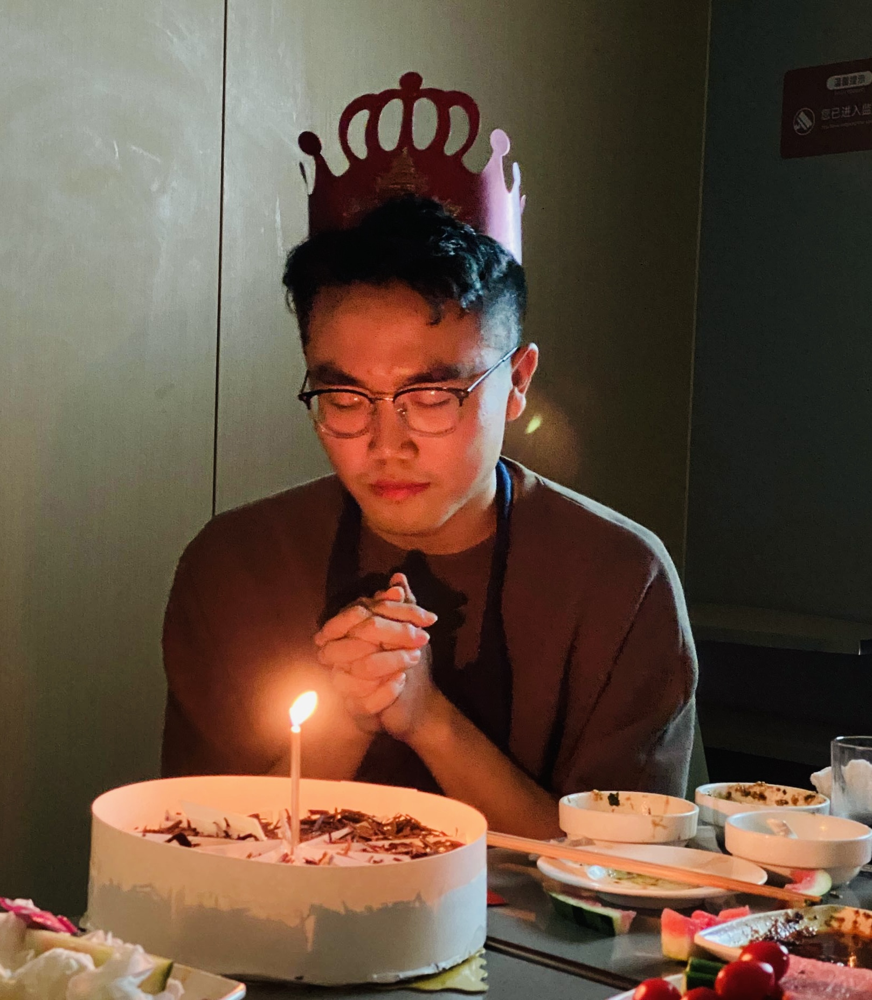

Jinsong Zhou(周劲松) is a senior undergraduate student at Southern University of Science and Technology (SUSTech) advised by Prof. Chao Wang. His research focuses on Semi-Supervised Learning in Biomedical Imaging. He had studied with Prof. Terence Sim on Masked & Unmasked Face Recognition during SoC Summer Workshop of NUS.